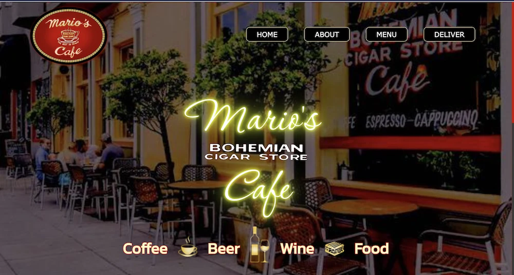
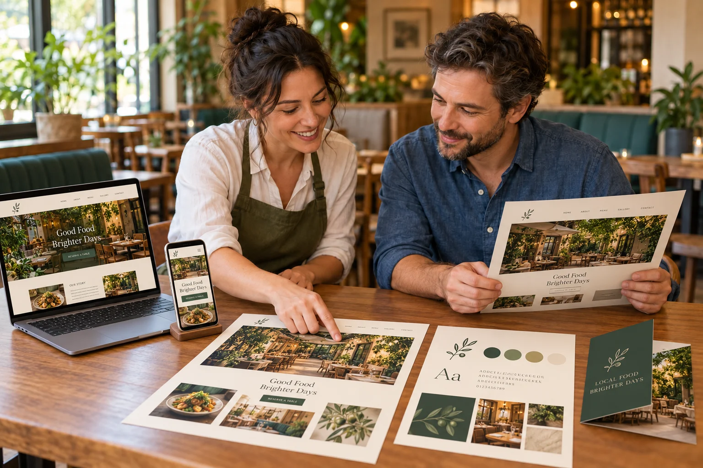
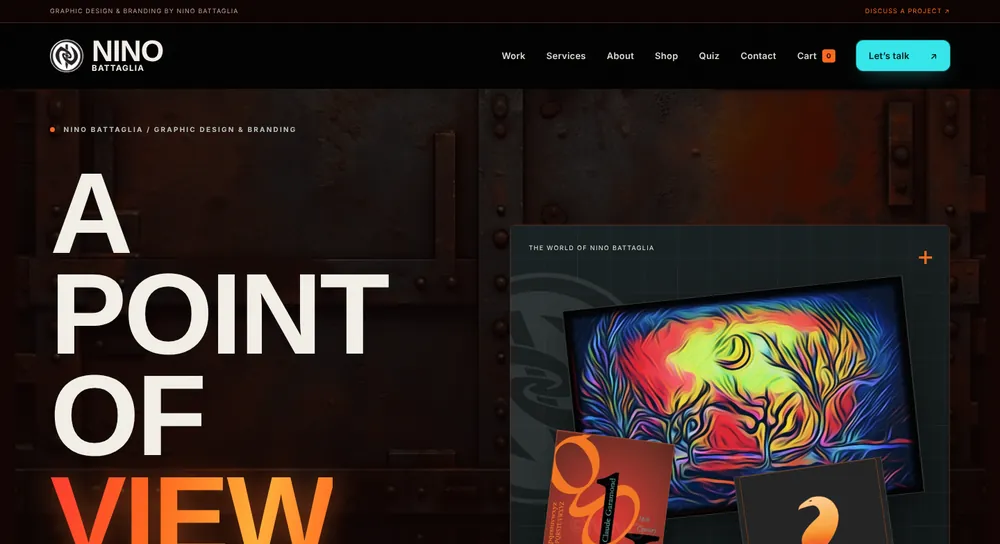
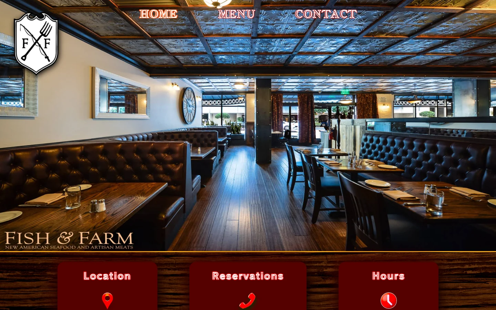
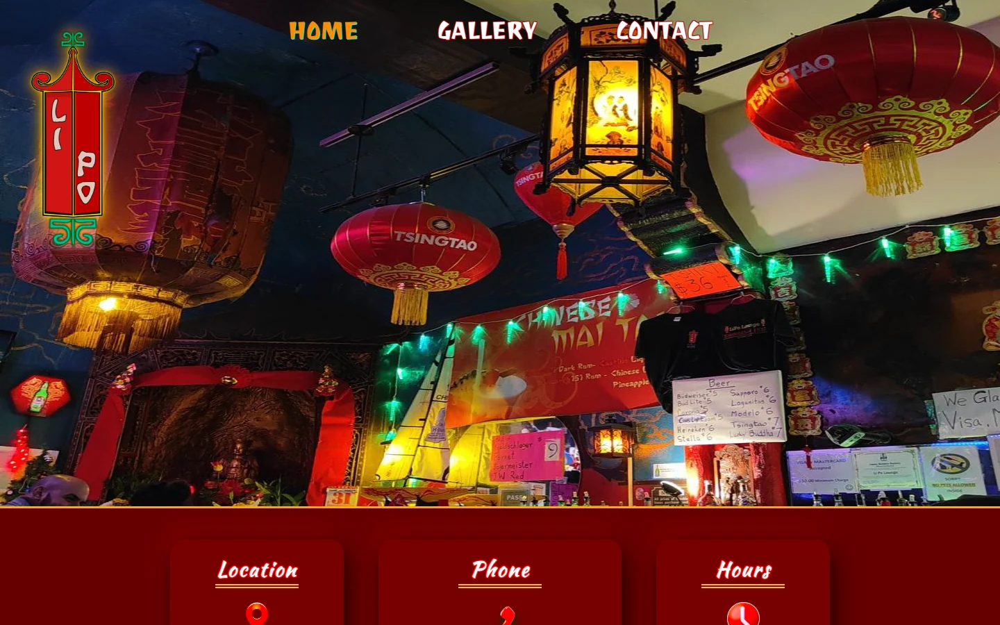
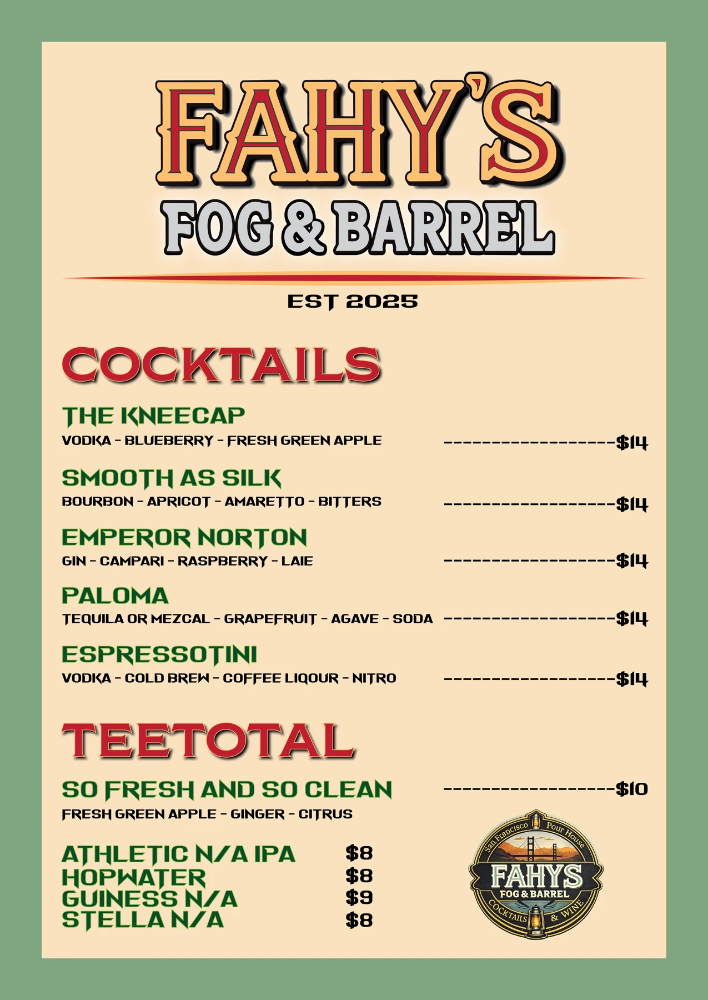
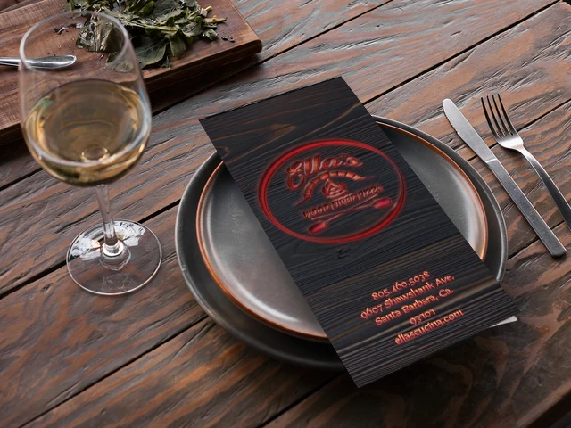

Café · Website design
Mario’s Café
Distinctive café branding, storefront photography, and direct routes to the menu and delivery give this homepage a recognizable local identity.


From a café website to a personal brand and a restaurant menu, our work brings each business’s personality online. Explore selected projects and the services that help customers find and use your business.

Archived homepages for a personal brand, a café, a restaurant, and a cocktail bar. Select an image to view the full design.

Café · Website design
Distinctive café branding, storefront photography, and direct routes to the menu and delivery give this homepage a recognizable local identity.

Personal brand · Website design
A custom visual identity and clear gallery, services, and contact navigation give this personal website its own character.

Restaurant · Website design
Restaurant interior photography sets the atmosphere, with recognizable branding and navigation to menus and contact information.

Cocktail bar · Website design
Lantern-filled bar photography, a distinctive identity, and gallery and contact navigation reflect the character of the venue.
Distinctive designs for a neighborhood bar, a wood-fired pizzeria, and a classic diner. Select an image to explore the archived menu.

Bar · Cocktail menu
A warm cream-and-green palette, bold drink names, and a vintage-inspired identity bring this cocktail menu together.

Pizzeria · Menu and brand design
Dark wood textures, red accents, and an Italian-inspired layout carry the restaurant’s identity from the cover through the food menu.

Diner · Dinner menu design
Olive accents, a classic checkerboard, and a photograph of the diner bring its character into a clear dinner and pasta menu.
These website and menu images are from our project archive. They show design work rather than current business details or menu prices. Try the interactive online menu sample to explore a working demonstration.
Our services extend beyond the design projects above. Explore support for discovery, usability, and mobile experiences.
Help customers find useful business details, your website, and your menu through Google Business Profile.
Improve website usability with support for keyboard navigation, contrast, labels, and forms.
Explore an app experience tailored to your business and the customers who return to it.